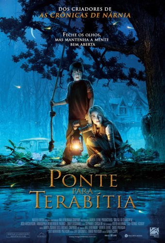

|  | Ponte Para Terabitia
Direção: Gabor Csupo
Roteiro Katherine Paterson, Jeff Stockwell
Elenco: Josh Hutcherson, AnnaSophia Robb, Zooey Deschanel
Jess Aarons (Josh Hutcherson) sente-se um estranho na escola e até mesmo em sua família. Durante todo o verão ele treinou para ser o garoto mais rápido da escola, mas seus planos são ameaçados por Leslie Burke (AnnaSophia Robb), que vence uma corrida que deveria ser apenas para garotos. Logo Jess e Leslie tornam-se grandes amigos e, juntos, criam o reino secreto de Terabítia, um lugar mágico onde apenas é possível chegar se pendurando em uma velha corda, que fica sobre um riacho perto de suas casas. Lá eles lutam contra Dark Master (Matt Gibbons) e suas criaturas, além de conspirar contra as brincadeiras de mau gosto que são feitas na escola. |
|
Acesse mais em YouTube SESSÕES
|